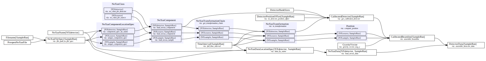

TBL data reduction#
[1]:
import plopp as pp
from ess.reduce import time_of_flight
from ess import tbl
import ess.tbl.data # noqa: F401
from ess.imaging.types import *
Create and configure the workflow#
[2]:
wf = tbl.TblWorkflow()
wf[Filename[SampleRun]] = tbl.data.tutorial_sample_data()
wf[TimeOfFlightLookupTableFilename] = tbl.data.tbl_tof_lookup_table_no_choppers()
Downloading file 'tbl_sample_data_2025-03.hdf' from 'https://public.esss.dk/groups/scipp/ess/tbl/2/tbl_sample_data_2025-03.hdf' to '/home/runner/.cache/ess/tbl'.
Downloading file 'TBL-tof-lookup-table-no-choppers.h5' from 'https://public.esss.dk/groups/scipp/ess/tbl/2/TBL-tof-lookup-table-no-choppers.h5' to '/home/runner/.cache/ess/tbl'.
nGEM detector data#
[3]:
wf[NeXusDetectorName] = "ngem_detector"
wf.visualize(RawDetector[SampleRun], graph_attr={"rankdir": "LR"})
[3]:

[4]:
ngem = wf.compute(RawDetector[SampleRun])
ngem
[4]:
scipp.DataArray (8.86 MB )
- dim_0: 2
- dim_1: 128
- dim_2: 128
- detector_number(dim_0, dim_1, dim_2)int321, 2, ..., 32767, 32768
Values:
array([[[ 1, 2, 3, ..., 126, 127, 128], [ 129, 130, 131, ..., 254, 255, 256], [ 257, 258, 259, ..., 382, 383, 384], ..., [16001, 16002, 16003, ..., 16126, 16127, 16128], [16129, 16130, 16131, ..., 16254, 16255, 16256], [16257, 16258, 16259, ..., 16382, 16383, 16384]], [[16385, 16386, 16387, ..., 16510, 16511, 16512], [16513, 16514, 16515, ..., 16638, 16639, 16640], [16641, 16642, 16643, ..., 16766, 16767, 16768], ..., [32385, 32386, 32387, ..., 32510, 32511, 32512], [32513, 32514, 32515, ..., 32638, 32639, 32640], [32641, 32642, 32643, ..., 32766, 32767, 32768]]], shape=(2, 128, 128), dtype=int32) - position(dim_0, dim_1, dim_2)vector3m[-0.1488 0.1488 -0.995 ], [-0.1465 0.1488 -0.995 ], ..., [ 0.1465 -0.1488 -1.005 ], [ 0.1488 -0.1488 -1.005 ]
Values:
array([[[[-0.1488, 0.1488, -0.995 ], [-0.1465, 0.1488, -0.995 ], [-0.1441, 0.1488, -0.995 ], ..., [ 0.1441, 0.1488, -0.995 ], [ 0.1465, 0.1488, -0.995 ], [ 0.1488, 0.1488, -0.995 ]], [[-0.1488, 0.1465, -0.995 ], [-0.1465, 0.1465, -0.995 ], [-0.1441, 0.1465, -0.995 ], ..., [ 0.1441, 0.1465, -0.995 ], [ 0.1465, 0.1465, -0.995 ], [ 0.1488, 0.1465, -0.995 ]], [[-0.1488, 0.1441, -0.995 ], [-0.1465, 0.1441, -0.995 ], [-0.1441, 0.1441, -0.995 ], ..., [ 0.1441, 0.1441, -0.995 ], [ 0.1465, 0.1441, -0.995 ], [ 0.1488, 0.1441, -0.995 ]], ..., [[-0.1488, -0.1441, -0.995 ], [-0.1465, -0.1441, -0.995 ], [-0.1441, -0.1441, -0.995 ], ..., [ 0.1441, -0.1441, -0.995 ], [ 0.1465, -0.1441, -0.995 ], [ 0.1488, -0.1441, -0.995 ]], [[-0.1488, -0.1465, -0.995 ], [-0.1465, -0.1465, -0.995 ], [-0.1441, -0.1465, -0.995 ], ..., [ 0.1441, -0.1465, -0.995 ], [ 0.1465, -0.1465, -0.995 ], [ 0.1488, -0.1465, -0.995 ]], [[-0.1488, -0.1488, -0.995 ], [-0.1465, -0.1488, -0.995 ], [-0.1441, -0.1488, -0.995 ], ..., [ 0.1441, -0.1488, -0.995 ], [ 0.1465, -0.1488, -0.995 ], [ 0.1488, -0.1488, -0.995 ]]], [[[-0.1488, 0.1488, -1.005 ], [-0.1465, 0.1488, -1.005 ], [-0.1441, 0.1488, -1.005 ], ..., [ 0.1441, 0.1488, -1.005 ], [ 0.1465, 0.1488, -1.005 ], [ 0.1488, 0.1488, -1.005 ]], [[-0.1488, 0.1465, -1.005 ], [-0.1465, 0.1465, -1.005 ], [-0.1441, 0.1465, -1.005 ], ..., [ 0.1441, 0.1465, -1.005 ], [ 0.1465, 0.1465, -1.005 ], [ 0.1488, 0.1465, -1.005 ]], [[-0.1488, 0.1441, -1.005 ], [-0.1465, 0.1441, -1.005 ], [-0.1441, 0.1441, -1.005 ], ..., [ 0.1441, 0.1441, -1.005 ], [ 0.1465, 0.1441, -1.005 ], [ 0.1488, 0.1441, -1.005 ]], ..., [[-0.1488, -0.1441, -1.005 ], [-0.1465, -0.1441, -1.005 ], [-0.1441, -0.1441, -1.005 ], ..., [ 0.1441, -0.1441, -1.005 ], [ 0.1465, -0.1441, -1.005 ], [ 0.1488, -0.1441, -1.005 ]], [[-0.1488, -0.1465, -1.005 ], [-0.1465, -0.1465, -1.005 ], [-0.1441, -0.1465, -1.005 ], ..., [ 0.1441, -0.1465, -1.005 ], [ 0.1465, -0.1465, -1.005 ], [ 0.1488, -0.1465, -1.005 ]], [[-0.1488, -0.1488, -1.005 ], [-0.1465, -0.1488, -1.005 ], [-0.1441, -0.1488, -1.005 ], ..., [ 0.1441, -0.1488, -1.005 ], [ 0.1465, -0.1488, -1.005 ], [ 0.1488, -0.1488, -1.005 ]]]], shape=(2, 128, 128, 3)) - x_pixel_offset(dim_0, dim_1, dim_2)float64m-0.149, -0.146, ..., 0.146, 0.149
Values:
array([[[-0.1488, -0.1465, -0.1441, ..., 0.1441, 0.1465, 0.1488], [-0.1488, -0.1465, -0.1441, ..., 0.1441, 0.1465, 0.1488], [-0.1488, -0.1465, -0.1441, ..., 0.1441, 0.1465, 0.1488], ..., [-0.1488, -0.1465, -0.1441, ..., 0.1441, 0.1465, 0.1488], [-0.1488, -0.1465, -0.1441, ..., 0.1441, 0.1465, 0.1488], [-0.1488, -0.1465, -0.1441, ..., 0.1441, 0.1465, 0.1488]], [[-0.1488, -0.1465, -0.1441, ..., 0.1441, 0.1465, 0.1488], [-0.1488, -0.1465, -0.1441, ..., 0.1441, 0.1465, 0.1488], [-0.1488, -0.1465, -0.1441, ..., 0.1441, 0.1465, 0.1488], ..., [-0.1488, -0.1465, -0.1441, ..., 0.1441, 0.1465, 0.1488], [-0.1488, -0.1465, -0.1441, ..., 0.1441, 0.1465, 0.1488], [-0.1488, -0.1465, -0.1441, ..., 0.1441, 0.1465, 0.1488]]], shape=(2, 128, 128)) - y_pixel_offset(dim_0, dim_1, dim_2)float64m0.149, 0.149, ..., -0.149, -0.149
Values:
array([[[ 0.1488, 0.1488, 0.1488, ..., 0.1488, 0.1488, 0.1488], [ 0.1465, 0.1465, 0.1465, ..., 0.1465, 0.1465, 0.1465], [ 0.1441, 0.1441, 0.1441, ..., 0.1441, 0.1441, 0.1441], ..., [-0.1441, -0.1441, -0.1441, ..., -0.1441, -0.1441, -0.1441], [-0.1465, -0.1465, -0.1465, ..., -0.1465, -0.1465, -0.1465], [-0.1488, -0.1488, -0.1488, ..., -0.1488, -0.1488, -0.1488]], [[ 0.1488, 0.1488, 0.1488, ..., 0.1488, 0.1488, 0.1488], [ 0.1465, 0.1465, 0.1465, ..., 0.1465, 0.1465, 0.1465], [ 0.1441, 0.1441, 0.1441, ..., 0.1441, 0.1441, 0.1441], ..., [-0.1441, -0.1441, -0.1441, ..., -0.1441, -0.1441, -0.1441], [-0.1465, -0.1465, -0.1465, ..., -0.1465, -0.1465, -0.1465], [-0.1488, -0.1488, -0.1488, ..., -0.1488, -0.1488, -0.1488]]], shape=(2, 128, 128)) - z_pixel_offset(dim_0, dim_1, dim_2)float64m0.005, 0.005, ..., -0.005, -0.005
Values:
array([[[ 0.005, 0.005, 0.005, ..., 0.005, 0.005, 0.005], [ 0.005, 0.005, 0.005, ..., 0.005, 0.005, 0.005], [ 0.005, 0.005, 0.005, ..., 0.005, 0.005, 0.005], ..., [ 0.005, 0.005, 0.005, ..., 0.005, 0.005, 0.005], [ 0.005, 0.005, 0.005, ..., 0.005, 0.005, 0.005], [ 0.005, 0.005, 0.005, ..., 0.005, 0.005, 0.005]], [[-0.005, -0.005, -0.005, ..., -0.005, -0.005, -0.005], [-0.005, -0.005, -0.005, ..., -0.005, -0.005, -0.005], [-0.005, -0.005, -0.005, ..., -0.005, -0.005, -0.005], ..., [-0.005, -0.005, -0.005, ..., -0.005, -0.005, -0.005], [-0.005, -0.005, -0.005, ..., -0.005, -0.005, -0.005], [-0.005, -0.005, -0.005, ..., -0.005, -0.005, -0.005]]], shape=(2, 128, 128))
- (dim_0, dim_1, dim_2)float32countsbinned data [len=4, len=12, ..., len=18, len=13]
dim='event', content=DataArray( dims=(event: 352698), data=float32[counts], coords={'event_time_offset':int32[ns], 'event_time_zero':datetime64[ns]})
[5]:
ngem['dim_0', 0].hist().plot(aspect='equal', title='First detection') + ngem['dim_0', 1].hist().plot(aspect='equal', title='Last detection')
[5]:
Time-of-flight#
[6]:
wf.visualize(TofDetector[SampleRun], graph_attr={"rankdir": "LR"})
[6]:

Visualize the time-of-flight lookup table#
[7]:
table = wf.compute(time_of_flight.TimeOfFlightLookupTable)
table.plot()
[7]:
Results#
[8]:
ngem_tofs = wf.compute(TofDetector[SampleRun])
ngem_wavs = wf.compute(WavelengthDetector[SampleRun])
ngem_tofs.bins.concat().hist(tof=100).plot() + ngem_wavs.bins.concat().hist(wavelength=100).plot()
[8]:
He3 detector data#
[9]:
he3_wf = wf.copy()
he3 = {}
for bank in ('he3_detector_bank0', 'he3_detector_bank1'):
he3_wf[NeXusDetectorName] = bank
he3[bank] = he3_wf.compute(RawDetector[SampleRun])
[10]:
lims = {'vmin': 0, 'vmax': 4500}
he3['he3_detector_bank0'].hist().plot(title='he3_bank0', **lims) + he3['he3_detector_bank1'].hist().plot(title='he3_bank1', **lims)
[10]:
Time-of-flight#
[11]:
he3_tofs = {}
he3_wavs = {}
for bank in ('he3_detector_bank0', 'he3_detector_bank1'):
he3_wf[NeXusDetectorName] = bank
he3_tofs[bank] = he3_wf.compute(TofDetector[SampleRun]).bins.concat().hist(tof=100)
he3_wavs[bank] = he3_wf.compute(WavelengthDetector[SampleRun]).bins.concat().hist(wavelength=100)
pp.plot(he3_tofs) + pp.plot(he3_wavs)
[11]: